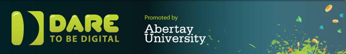

ABOUT DARE TO BE DIGITAL
Dare to be Digital was established by partners Scottish Enterprise Tayside, Dundee City Council and the University of Abertay Dundee in 2000, when the competition was piloted to students at Abertay. Dare has tried and tested many different models over the years. In 2002 Dare opened its doors to all students in Scottish Universities and Colleges of Art and was also joined for the first time by an international team, this year from Japan (in subsequent years up to 2010 we have had international teams join us from Canada, Malaysia and America). 2004 saw the start of Dare's partnership with Ireland, who have remained with the competition to this present day.
For the first and only time, teams in 2005 were comprised of 6 members instead of the usual 5. The sixth team member was an international student from either Taiwan, Hong Kong, China, India, Malaysia or Singapore and took part in Dare 2005 as part of the Scottish Executive's Fresh Talent initiative. 2005 was also the first year that teams from England and Northern Ireland joined the competition.
Dare 2007 proved to be one of the most exciting and diverse where many things happened 'for the first time'! The number of teams increased to 12 and were split across hosting centres in Scotland, England and Northern Ireland. It was also the first time that a team from India and China joined the UK-based teams, these two international teams each comprising 4 team members from their respective countries, with the 5th member of each team being a "Dare Scholar" from Scotland. It was the first year of Dare ProtoPlay, a talent showcasing event in Edinburgh which witnessed the general public playing and voting alongside a panel of industry experts! It was the first year of Dare's involvement with the BAFTA Video Games Awards, with the 3 winning teams forming the shortlist for a new BAFTA Ones to Watch Award. Voodoo Boogy by Ragnarawk gets a special mention here for being the first team to win this award. The following year the competition increased to include 17 teams, hosted in centres in Dundee, Birmingham, Dublin, London and Brighton. This was the last year that the competition was hosted in centres outwith Abertay University.
2009 saw all teams hosted at Abertay University and was the first year that a Scandinavian team joined the competition. This was Dare ProtoPlay's third year and increased in size to take up 2 floors of the Edinburgh International Conference Centre.
A Channel 4 commissioned production company filmed Dare throughout the 2010 competition, following the teams for a 3-part documentary called "Crunch Time" which was aired in early 2011. In 2011 Dare took a big risk bringing Dare ProtoPlay home to Dundee, and was held in the Caird Hall. The risk paid off with audience numbers tripling in size to around 9,000 over the 3 days. This number increased to around 10,000 in 2012.
For more info about Dare to be Digital visit daretobedigital.com
For more info about Dare to be Digital Nordic visit http://www.facebook.com/DareNordic?fref=tck